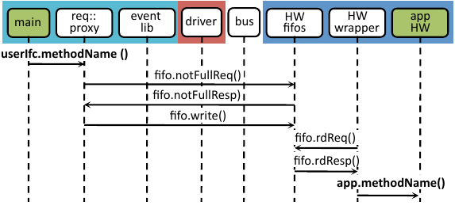
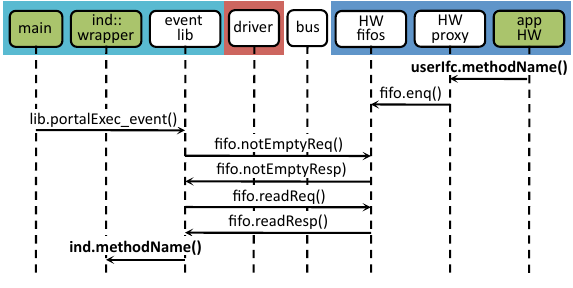
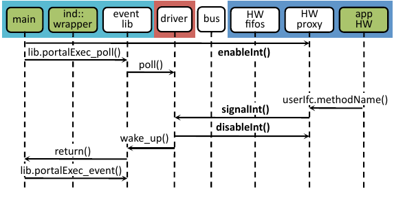

Implementing String Search¶
Having covered the features of the Connectal at a high level, we now explain more specifically how the framework can be applied to implement the refinements outlined in Section Accelerating String Search.
Initial Implementation¶
The FPGA is connected to the host system with a PCIe bus, and to the memory array with wires. In addition to implementing a search kernel, the hardware accelerator must communicate with the software components and with the flash chips. Communication with the software takes place through portals, whose interface declaration is given below:
interface StrstrRequest;
method Action setupNeedle(Bit#(8) needleChars);
method Action search(Bit#(32) haystackPtr,
Bit#(32) haystackLen);
endinterface
interface StrstrIndication;
method Action searchResult(Int#(32) v);
method Action setupComplete();
endinterface
The hardware implements the StrstrRequest interface, which the software invokes (remotely) to specify the search string and the location in flash memory to search. The software implements the StrstrIndication interface, which the hardware invokes (remotely) to notify the software of configuration completion or search results. The interface compiler generates a separate portal for each of these interfaces. Within each portal, a dedicated unidirectional FIFO is assigned to each logical interface method.
In our initial implementation the accelerator does not access system memory directly, so the search string is transmitted to the accelerator one character at a time via the {tt setupNeedle} method. We will see in Section :ref:Sec-StringSearchSystemMemory` how to use a pointer to system memory instead.
Invoking Hardware from Software¶
Because the StrStrRequest functionality is implemented in hardware, the Connectal interface compiler generates a C++ textbf{proxy} with the following interface to be invoked by the application software:
class StrStrRequestProxy : public Portal {
public:
void setupNeedle(uint32_t needleChars);
void search(uint32_t haystackPtr,
uint32_t haystackLen);
};
The implementation of StrStrRequestProxy marshals the arguments of each method and en-queues them directly into their dedicated hardware FIFOs. To execute searches in the FPGA fabric over data stored in flash memory, the software developer simply instantiates StrStrRequestProxy and invokes its methods:
StrStrRequestProxy *proxy =
new StrStrRequestProxy(...);
proxy->search(haystackPtr, haystackLen);
On the FPGA, the user implements the application logic as a BSV module with the StrStrRequest interface. A wrapper is generated by the interface compiler to connect this module to the hardware FIFOs. The wrapper unmarshals messages that it receives and then invokes the appropriate method in the StrStrRequest interface. Here is the BSV code that instantiates the generated wrapper and connects it to the user’s texttt{mkStrStr} module:
StrStrRequest strStr <- mkStrStr(...);
StrStrRequestWrapper wrapper <-
mkStrStrRequestWrapper(strStr);
Figure :ref:`Fig-msc1`_ shows how all the pieces of an application implemented using Connectal work together when hardware functionality is invoked remotely from software. Direct access to the memory mapped hardware FIFOs by the generated proxy running in user-mode is key to the efficiency of our implementation strategy.
SW invokes HW: main and app HW are implemented by the user.¶
Invoking Software from Hardware¶
Invoking software from hardware takes a slightly different form, due primarily to the fact that ``main’’ is still owned by software. Since the direction of the remote invocation is reversed, the proxy on this path will be instantiated on the FPGA and the wrapper instantiated on host side. The user implements the StrStrResponse interface in software and connects it to the generated wrapper using C++ subclasses:
class StrStrResponse:
public StrStrResponseWrapper {
...
void searchResult(int32_t v) {...}
}
The StrStrResponseWrapper constructor registers a pointer to the object with the event library which keeps track of all instantiated software wrappers. The wrapper implementation unmarshals messages sent through the hardware FIFOs and invokes the appropriate subclass interface method. To activate this path, main simply instantiates the response implementation and invokes the library event handler:
StrStrResponse *response =
new StrStrResponse(...);
while(1)
portalExec_event();
On the invocation side, the interface compiler generates a proxy which the application logic instantiates and invokes directly:
StrStrResponseProxy proxy <-
mkStrStrRequestProxy();
StrStrRequest strStr <-
mkStrStr(... proxy.ifc ...);
Figure :ref:Fig-msc0 shows how all the pieces of an application collaborate when software functionality is being invoked from hardware.
The simplest software execution environment for the string search accelerator is to have a single thread making requests and waiting for responses as follows:
void search(char *str){
StrStrRequestProxy *req =
new StrStrRequestProxy(...);
StrStrResponse *resp =
new StrStrResponse(...);
while (char c = *str++)
req->setupNeedle(c);
// start search
req->search(...);
// handle responses from the HW
while(1)
portalExec_event();
}
The call to :c:func:portalExec_event() checks for a response from HW. If there is a pending response, it invokes the method corresponding to that FIFO in the wrapper class. This generated method reads out a complete message from the FIFO and unmarshals it before invoking the user-defined call-back function, which in this case would be texttt{StrStrResponse::searchResult}.
Connecting To Flash¶
On BlueDBM, one of our target platforms, the flash memory array is connected directly to the FPGA chip, and DDR signals are used to read/write/erase flash memory cells. The RTL required to communicate with the memory requires some commonly used functionality, such as SerDes and DDR controllers, both of which are included in the BSV libraries distributed as part of the Connectal framework.
Multithreading The Software¶
In many cases, we would like to avoid a hardware-to-software path which requires the software to poll a hardware register on the other side of a bus for relatively infrequent events. To accommodate this, the Connectal framework generates interrupts which are raised when hardware invokes software interface methods. The generic Connectal driver connects these signals to the Linux kernel and the software wrappers can exploit then by calling poll. Connectal applications often use a separate thread to execute hardware-to-software asynchronous invocations, since dedicated thread can put itself to sleep until the hardware raises an interrupt. The ``main’’ thread is free to do other work and can communicate with the ``indication’’ thread using a semaphore as shown below:
class StrStrResponse:
public StrStrResponseWrapper {
sem_t sem;
int v;
void searchResult(int32_t v) {
this->response = v;
sem_post(&sem);
}
void waitResponse(){sem_wait(&sem);}
};
StrStrResponse *resp;
StrStrRequestProxy *req;
int search(char *str){
while (char c = *str++)
req->setupNeedle(c);
// start search
req->search(...);
// wait for response
resp->waitResponse();
// return result
return resp->v;
}
The polling thread is started by a call to :c:func:portalExec_start(), which ultimately invokes the :c:func:portalExec_poll() function implemented in the Connectal event library. :c:func:portalExec_poll() invokes the system call textbf{poll} on the FDs corresponding to all the indication or response portals, putting itself to sleep. When an interface method is invoked in the hardware proxy, an interrupt is raised, waking the indication thread. A register is read which indicates which method is being called and the corresponding wrapper method is invoked to read/marshal the arguments and invoke the actual user-defined methods. Figure Fig-msc2 shows this process.
Multithreading often leads to simultaneous access to shared hardware resources. If a software solution to protect these resources (such as mutex) is not available, the hardware interface can be refactored into separate portals, one for each control thread.
Each interface will generate a separate Portal which is assigned its own address space and Linux device. Using Linux devices in this way enables access control restrictions to be specified individually for each portal. This feature can be used to grant different users or processes exclusive access and prevent unauthorized access to specific pieces of hardware functionality.
Alternate Portal Implementations¶
Connectal separates the generation of code for marshalling and unmarshaling method arguments from the transport mechanism used to transmit the messages. This separation enables ``swappable’’ application-specific transport libraries. In light of this, a large number of transport mechanism can be considered. Switching between mechanism requires a simple directive in the project Makefile (more details are given in Section Sec-ToolChain).
By default, each portal is mapped to a region of address space and a memory-mapped FIFO channel is generated for each method. Though software access to all FIFO channels in a design may occur through single bus slave interface, Connectal libraries implement their multiplexing to ensure that each FIFO is independent, allowing concurrent access to different methods from multiple threads or processes.
The default portal library implements the method FIFOs in the hardware accelerator. This provides the lowest latency path between hardware and software, taking about 1 microsecond to send a message. If higher bandwidth or transaction rates are needed, FIFOs implemented as a ring buffer in DRAM can be used instead. This requires more instructions per message send and receive, but may achieve higher throughput between the CPU and hardware.
During the design exploration process, a component originally implemented on the FPGA may migrate to software running on the host processor. Remote invocations which were originally from software to hardware must be recast as software to software. Without changing the IDL specification, the transport mechanism assigned to a portal can be re-specified to implement communication between software components running either on the same host or across a network.
Connectal uses UNIX sockets or shared memory to transport messages between the application software components or the hardware simulator. In other situations, TCP or UDP can be used to transport the messages to hardware running on another machine. Viable connections to the FPGA board range from low-speed interconnects such as JTAG, SPI, to higher-speed interconnects such as USB or Aurora over multi-gigabit per second transceivers.